have exactly
have exactly  and variance
and variance  .
.
Definition
Fock space
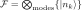
(Fock 1932). Single mode: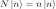
,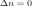
. The mean field vanishes for every ,
, 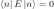
, but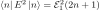
: a phase-randomised wave with definite energy.Thermal state
Maximising entropy at fixed
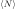
gives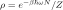
(Planck 1901):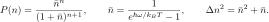
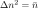
) by the "wave noise" term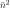
. Multiplying by the mode density
by the mode density 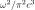
and gives Planck's law.
gives Planck's law.
Worked example
At 300 K: an optical mode (
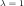
µm,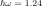
eV) has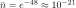
— optical modes are in vacuum at room temperature. A 5 GHz microwave mode has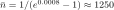
; at 10 mK,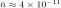
. This is why superconducting qubits must be cooled to millikelvin.Engineering applications
Heralded single-photon sources (SPDC: detect one photon of a pair to announce the other), quantum dots and NV centres as on-demand emitters, photon-number-resolving transition-edge sensors; thermal photon occupation sets the noise temperature of microwave receivers.
Pitfall
A strongly attenuated laser is not a single-photon source: it remains a coherent (Poisson) state with a probability
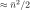
of two photons, the loophole exploited by photon-number-splitting attacks on QKD.